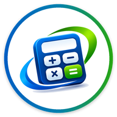

Privacy Policy
DviCalculator by Dvirukthi · Effective 14 November 2026
This policy explains how the DviCalculator Android app ("the app"), made by Dvirukthi ("we"), handles information. In short: your business data stays on your device, and if you turn on Google Drive sync it is encrypted before it is stored in your own Google Drive. We do not run servers that receive your data, and we do not sell, share or use your data for advertising.
1. Data the app stores on your device
To do its job, the app stores the information you enter in a database on your device, including:
- your business details (name, address, phone, email, GSTIN);
- customers, suppliers, products, prices and price history;
- invoices, payments, returns, stock, expenses and daily closing records;
- staff names and roles. Staff PINs are stored only as salted PBKDF2 hashes, never in plain text;
- an audit log of changes made in the app.
This data is not sent to us. It leaves your device only in the ways described in sections 2 and 3, each of which you start yourself.
2. Files you export or share
When you export data, print, or share an invoice or report (for example through WhatsApp), the app creates the file and hands it to the location or app you choose. What happens next is governed by that app or service. The app does not send these files anywhere by itself.
3. Optional Google Drive sync and Google user data
Sync is off until you connect a Google account. When you connect one:
- Access requested: only the Google Drive scope
drive.file("see, edit, create and delete only the specific Google Drive files you use with this app"). The app cannot see or change any other files in your Drive, and it does not request access to Gmail, contacts or other Google data. - What is read: the email address of the connected Google account, so the app can show which account sync uses. It is stored only on your device and is not included in synced data.
- What is stored in your Drive: a folder named DviCalculator Sync containing encrypted copies of your business data and changes, plus a small settings file without business data or keys.
- Encryption: data is encrypted on your device with AES-256-GCM, using a key derived from a sync passphrase you choose (PBKDF2-HMAC-SHA256). The passphrase is never uploaded, and the key is kept only in your device's Android Keystore-protected storage. Neither Google nor we can read the synced data.
- How it is used: only to keep your own devices up to date and to let you restore your data. Google user data is not transferred to us or to anyone else, not used for advertising, and not used to train AI or machine-learning models.
DviCalculator's use and transfer of information received from Google APIs adheres to the Google API Services User Data Policy, including the Limited Use requirements.
4. What we do not do
- No advertising, analytics, tracking or crash-reporting services are built into the app.
- No account with Dvirukthi is needed, and we do not operate a server that collects your data.
- We do not sell or rent any data.
5. Device permissions
The app uses internet and network-state access only for Google sign-in and Drive sync, and to sync when a connection is available. It does not request storage, contacts, location, camera or microphone permissions; it opens or saves files only through the system file picker when you choose a file.
6. Keeping and deleting your data
- On your device: uninstalling the app or clearing its storage deletes its local data.
- In Google Drive: use Disconnect on the app's Sync screen to revoke access and remove the sync key from the device. You can delete the DviCalculator Sync folder from your Drive at any time, and you can review or remove the app's access at myaccount.google.com/permissions.
7. Security
Synced data is encrypted end-to-end as described above. If you lose your sync passphrase, cloud copies cannot be decrypted by anyone, including us; the data on your devices is not affected.
8. Children
The app is a business tool and is not directed at children under 13.
9. Changes to this policy
If this policy changes, the updated version will be posted on this page with a new effective date.
10. Contact
Questions about this policy: dvirukthi@gmail.com